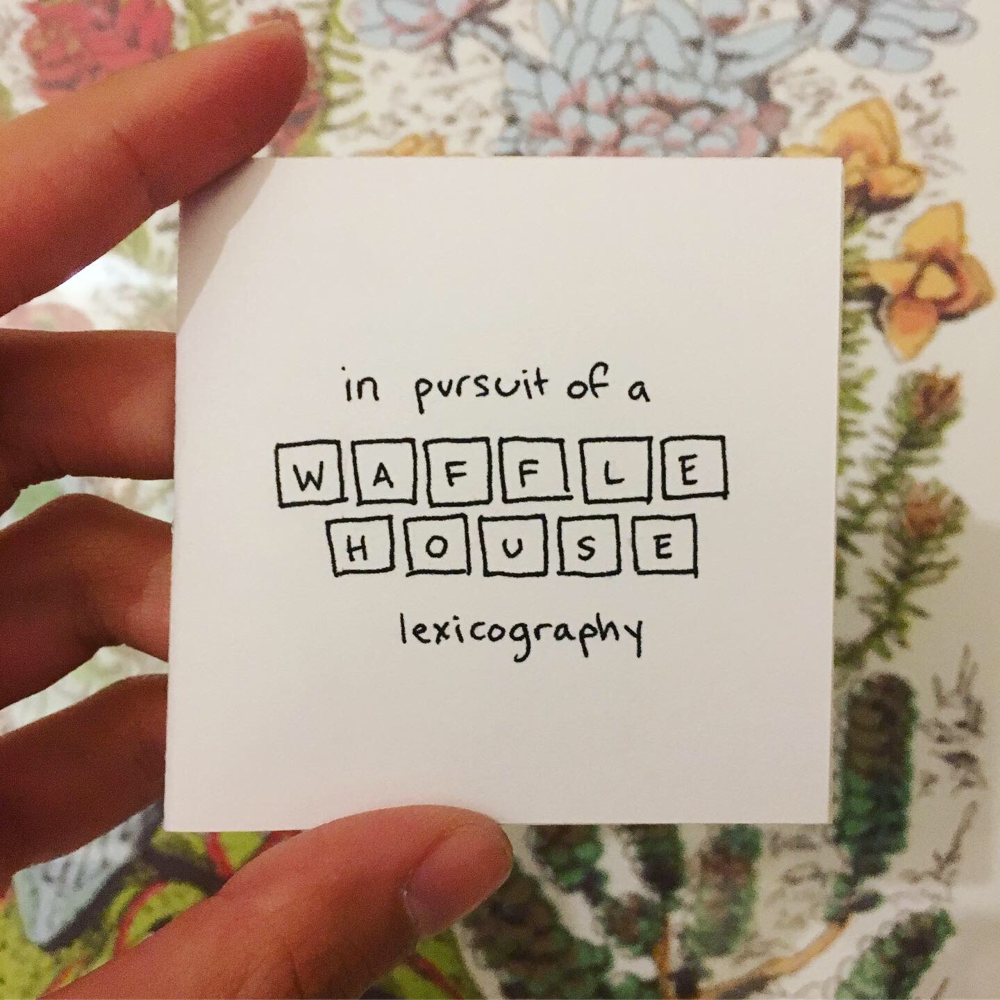
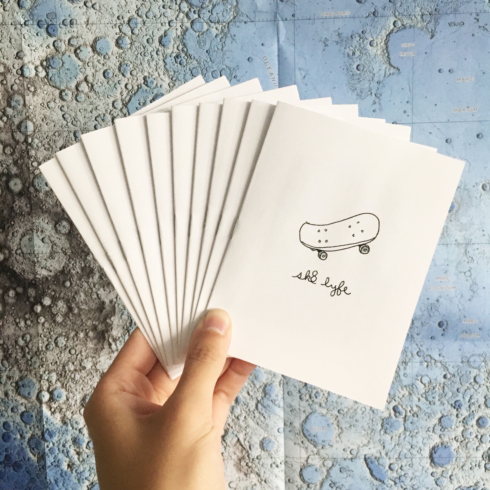

#################################
# apparently I'm a zinester now #
#################################
the idea would be to have photos of each zine cover here, and they could be clicked through to actually read the zine. photos as opposed to scans tho

in pursuit of a waffle house lexicography, 2019

sk8 lyfe, 2018
| Favorite Color | |
|---|---|
| Bob | Yellow |